Actions on Googleは、スマートスピーカー、携帯電話、車、テレビ、ヘッドフォンなど、5億以上のデバイスにわたって、Googleの仮想パーソナルアシスタントであるGoogleアシスタントの機能を拡張するためのソフトウェアを作成できる、開発者向けプラットフォームです。ユーザーは、食料品の購入や乗車予約など、何かを達成するためにGoogleアシスタントを会話に加えることができます（現在の機能の完全なリストについては、アクションディレクトリをご覧ください）。開発者は、Actions on Googleを使用して、ユーザーとサードパーティのフルフィルメントサービスとの間の楽しく効果的な会話体験を簡単に作成し活用することができます。
このコードラボは、スマートディスプレイ向けのアクションを構築するための手順をカバーします。ここで構築するアクションは、スマートディスプレイが持つ画面を活用しつつ音声で操作を行うアクションです。
このコードラボは、Actions on Googleを使った開発に対する中級以上のレベルのコンセプトをカバーします。私たちは、このコードラボを開始する前に、Level 1, Level 2 および Level 3 のコードラボにてカバーされるトピックについて、あなた自身で習熟しておくことをお勧めします。
何をつくりますか？
このコードラボでは、以下の特徴を持つ Interactive Canvas を使ったスマートディスプレイ向けアクションを構築します。
- 会話型アクションに対してスマートディスプレイが持つ画面を最大限活かした視覚的な情報を追加します。
- ユーザからの音声での入力に対して、スマートディスプレイ上の画面を更新します。
- ユーザの画面上の操作に対して、アクションに要求を送信します。
このコードラボでは、じゃんけんゲームアクションを構築します。
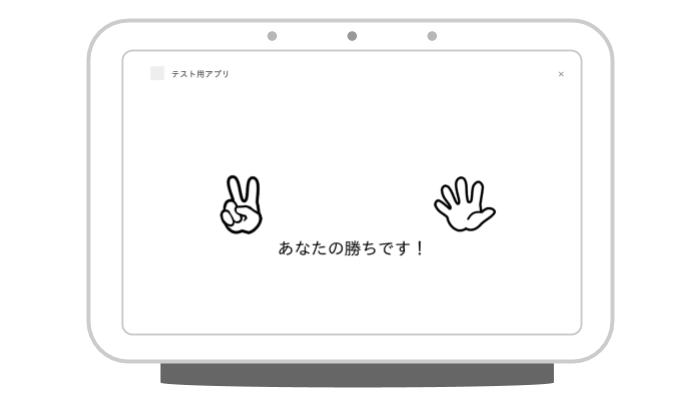
以下のスクリーンショットは、あなたが開発するアクションでの会話フローの例を示しています。最初の画面で、ユーザはグー、チョキ、パーのどれを出すか選択します。その後、アクションが何を出すか考えている間を示す画像に切り替えます。そして、じゃんけんの結果を表示します。最後に、再び遊ぶかどうかをユーザに問い合わせます。
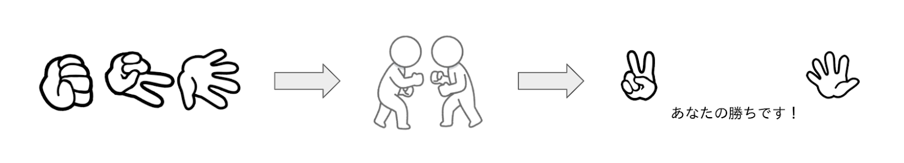
What you'll learn
- 会話型アクションに Interactive Canvas による視覚的な情報を追加するための方法。
- ユーザの音声入力を受け取り、それに対して画面を更新するための方法。
- ユーザの画面の操作を受け取り、それに対する何らかの処理をするための方法。
必要なもの
以下のツールがあなたの環境に必要となります。
- WebStorm、Atom、または Sublime のような、あなたが選択したIDE/テキストエディタ。
- インストールされている NodeJS、npm、および git を含むシェルコマンドを実行するためのターミナル。
- Chromeのような、ウェブブラウザ。
このコードラボで使われる Webhook コードを理解するために JavaScript (ES6) に精通していることを強く勧めますが、必須ではありません。
任意: サンプルコード
任意ですが、私たちの GitHubリポジトリ から、このコードラボの全てのプロジェクトコードを得ることができます。
Interactive Canvas は、会話型アクションをインタラクティブなウェブアプリに接続して、ユーザーが音声またはタッチでビジュアルなユーザーインターフェイスと対話できるようにする機能です。Interactive Canvas を使用するアクションには、次の4つのコンポーネントがあります。
- 会話型アクション: 会話型インターフェイスを使用してユーザーの要求を満たすアクションです。Interactive Canvasを使用するアクションは、会話型アクションと基本的に同じように機能しますが、BasicCard などのリッチレスポンスの代わりに、没入型のウェブビュー（ImmersiveResponse）を使用して応答をレンダリングします。
- ウェブアプリ: 会話中にアクションがユーザーへの応答として送信する、視覚的情報を持つフロントエンドウェブアプリです。HTML、JavaScript、CSSなどのウェブ標準技術を使って、ウェブアプリを構築します。 assistantCanvas を使用することで、ウェブアプリは会話アクションと通信できます。
- assistantCanvas: ウェブアプリと会話型アクションの間の通信を可能にするためにウェブアプリ内で使用する JavaScript API です。
- ImmersiveResponse: ウェブアプリが画面を更新する方法を定義するレスポンスタイプです。
Interactive Canvasの仕組みを説明するために、Cool Colors という架空の Interactive Canvas アクションを使用して、デバイスの画面の色をユーザーが指定した色に変更する手順を紹介しましょう。ユーザーがアクションを呼び出した後、フローは次のようになります。

- ユーザは、アシスタントデバイス（この場合はスマートディスプレイ）に向かって、「画面を青色にして」と言います。
- Actions on Googleプラットフォームは、インテントにマッチさせるために、ユーザの要求をDialogflowにルーティングします。
- 一致したインテントのフルフィルメントが実行され、ImmersiveResponse がスマートディスプレイに送信されます。まだロードされていない場合、デバイスはURLを使用してウェブアプリをロードします。
- ウェブアプリがロードされた後に、assistantCanvas API を使用してコールバックを登録します。次に、ウェブアプリから登録された onUpdate コールバック関数に state 値が渡されます。この例では、フルフィルメントは、"blue" の値を持つ変数を含む state 値を格納した ImmersiveResponse を送信します。
- ウェブアプリのカスタムロジックは、ImmersiveResponse の state 値を読み取り、定義済みの変更を加えます。この例では、画面を青色に変更します。
- assistantCanvas は、コールバックの更新を、スマートディスプレイに送信します。
もしあなたが既にFirebase command-line interfaceをインストールしている場合は、ここの手順を行わずに、次のセクションに進むことができます。
Firebase Command Line Interface (CLI) は、Cloud Functions にあなたの Actions project をデプロイ可能にします。
CLIをインストールまたはアップグレードするために、以下の npm コマンドを実行してください:
npm -g install firebase-toolsCLI が正しくインストールされたかどうかを検証するために、ターミナルを開いて、以下を実行してください:
firebase --versionCloud Functions の最新の機能全てが必要となるので、Firebase CLI のバージョンが 3.5.0 以上かどうかを確認してください。もしそうでなければ、3.5.0 以上にアップグレードするために、 npm install -g firebase-tools を実行してください。
次のコマンドを実行して、Firebase CLI を認可します:
firebase loginでは、アクションの構築を始めましょう。このセクションでは、各プロジェクトの作成と準備を行います。
Googleの権限設定を確認する
このコードラボで作成するアクションをテストするには、必要な権限を有効にする必要があります。
- "Activity Controls" ページに行きます (https://myaccount.google.com/activitycontrols)。
- サインインされていなければ、あなたのGoogleアカウントでサインインします。
- 以下の権限を有効にします。
- Web & App Activity
- Device Information
- Voice & Audio Activity
プロジェクトとエージェントをセットアップする
Actionsプロジェクトを作成し、対話に必要となる自然言語処理エンジンとしてDialogflowエージェントも準備します。まず、Actionsプロジェクトを以下の手順で作成します。
- Actions console を開きます。
- Add/import project をクリックします。
- "rock-paper-scissors-ja" のように、Project name を入力します。この名前は、あなた自身の内部参照として使われることになり、後で外部向けにプロジェクトの名前をセットすることが可能です。同時に、Choose a language for your Actions project として "Japanese" を、Choose your country or region として "Japan" を選択します。
- Create Project をクリックします。
- 画面の下にある Conversational をクリックします。
Actionsプロジェクト作成後、Interactive Canvas機能を有効にします。そのために、以下の手順を行います。
- 左のナビゲーションから、Deploy > Directory information をクリックします。
- Additional Information > Category にて "Games & fun" を選択します。
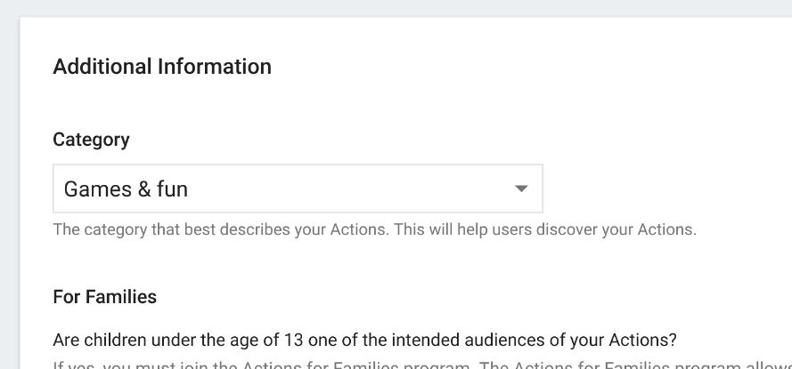 - Interactive Canvas の "Yes" にチェックを入れる。

- 画面上部にある Save ボタンを押す。
次に、Dialogflowエージェントを以下の手順で作成します。
- 左のナビゲーションから、Build > Actions をクリックします。
- Add your first Action をクリックします。
- Create Action ダイアログ上で、Custom Intent を選択して、Dialogflow consoleを起動するために Build をクリックします。
- Dialogflow consoleの Create Agent ページにて、DEFAULT LANGUAGE として "Japanese - ja" を選択した後に、Create をクリックします。
コードセットを生成する
このコードラボでは、ローカル環境にて各種コードを作成します。具体的には、フルフィルメントのコード、およびInteractive Canvasで表示されるウェブコンテンツの2つを作成します。フルフィルメントはCloud Functions for Firebaseを、ウェブコンテンツはFirebase Hostingを使って実装します。
では、コードセットを生成します。ターミナルを開き、以下のコマンドを実行します。
$ mkdir rock-paper-scissors-ja
$ cd rock-paper-scissors-ja
$ firebase initfirebaseコマンドは、いくつかの質問を尋ねてきます。以下のように回答します。
- Which Firebase CLI features do you want to set up for this folder? - Functions および Hosting を選択する。
◯ Database: Deploy Firebase Realtime Database Rules
◯ Firestore: Deploy rules and create indexes for Firestore
❯◉ Functions: Configure and deploy Cloud Functions
◉ Hosting: Configure and deploy Firebase Hosting sites
◯ Storage: Deploy Cloud Storage security rules- Select a default Firebase project for this directory - Actionsプロジェクトを作成した際に、同時にGoogle Cloud Platformにプロジェクトが作成されています。ここでは、そのプロジェクトIDを選択します。もしそれとは別に新規にプロジェクトを作成したい場合は、"[Create a new project]" を選択してください。
- What language would you like to use to write Cloud Functions? - このコードラボでは、"JavaScript" を選択します。
❯ JavaScript
TypeScript - Do you want to use ESLint to catch probable bugs and enforce style? - "N" を選択します。
- Do you want to install dependencies with npm now? - "Y" を選択します。
上記の回答がすべて完了すると、FunctionsおよびHostingのファイル群が生成され、その後に依存ライブラリのインストールが行われます。続いて、Hostingのための設定に関する質問が表示されるので、以下のように回答します、
- What do you want to use as your public directory? - "public" を入力します。
- Configure as a single-page app (rewrite all urls to /index.html)? - "N" を選択します。
生成されるファイル群は、以下となります。
├── .firebaserc
├── .gitignore
├── firebase.json
├── functions
│ ├── .gitignore
│ ├── index.js
│ ├── node_modules
│ ├── package-lock.json
│ └── package.json
└── public
├── 404.html
└── index.html依存ライブラリの追加とフルフィルメントの初期ファイルの作成
生成された Function のコードセットに対して、Actions on Google Client Library を依存ライブラリとして追加します。以下のコマンドを実行します。
$ cd functions
$ npm install actions-on-google@preview --save
$ cd ..次に、functionsディレクトリにある index.js ファイルの内容を以下で置き換えます。
const functions = require('firebase-functions');
const {
dialogflow,
ImmersiveResponse
} = require('actions-on-google');
const firebaseConfig = JSON.parse(process.env.FIREBASE_CONFIG);
const app = dialogflow({
debug: true
});
// TODO: Write your code here.
exports.fulfillment = functions.https.onRequest(app);フルフィルメントおよびウェブコンテンツをデプロイする
コードセット生成後、フルフィルメントおよびウェブコンテンツをFirebaseにデプロイします。以下の手順を行います。
$ firebase deploy数分後、あなたは Firebase にあなたの Webhook が正常にデプロイされたことを示す "Deploy complete!" というメッセージを見るはずです。
デプロイメントURLの入手
あなたは、Cloud Functions の URL を Dialogflow に提供する必要があります。この URL を得るために、以下の手順に従ってください:
- Firebase Console を開きます。
- オプションのリストから、あなたの Actions project を選択します。
- 左のナビゲーションメニューから、Develop > Functions に移動します。
- Dashboard タブにて、Event の下にある "fulfillment" のエントリに URL があるはずです。この URL をコピーします。
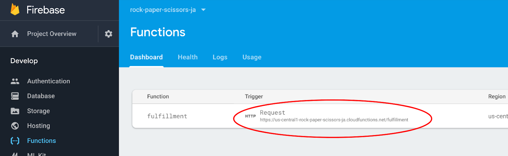
DialogflowにてURLをセットする
この時点で、あなたはフルフィルメントを使うために Dialogflow エージェントを更新する必要があります。そのためには、以下の手順に従います:
- Dialogflow Console を開きます。
- 左のナビゲーションから、Fulfillment に移動します。
- Webhook を有効にします。
- Firebase Console からコピーした URL をペースとします。
- Save をクリックします。
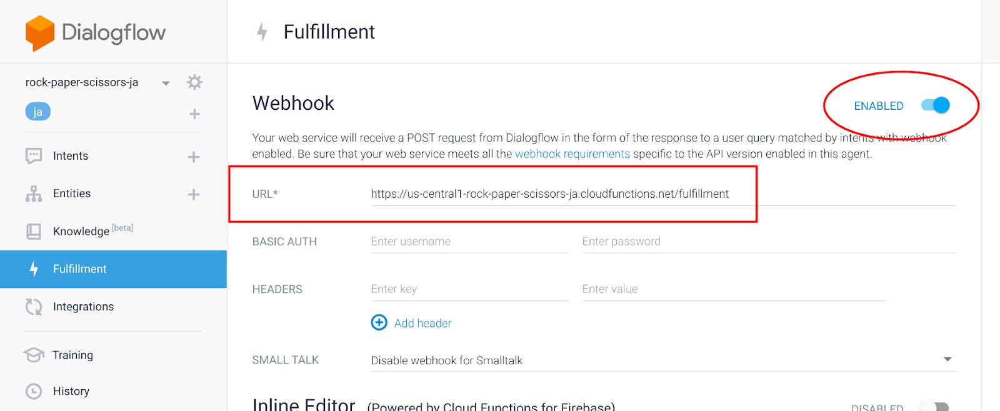
プロジェクトが正しくセットアップされたかどうかを確認する
この時点で、ユーザーは明示的にアクションを呼び出すことによって会話を開始できます。 Dialogflow は、ユーザからの呼び出しに応じて返事を送信し、Googleアシスタントがそれを発話します。ここで、動作確認を行います。
Actions console simulator であなたのアクションをテストするために以下を行ってください。
- Dialogflow Console の左のナビゲーションにて、 Integrations > Google Assistant をクリックします。
- Auto-preview changes が有効になっていることを確認して、Actions project を更新するために Test をクリックします。
- Actions Console simulator は、あなたのアクションを読み込みます。アクションをテストするために、Input フィールド内に "テスト用アプリにつないで" とタイプして、Enter キーを押します。
- "はい。 テスト用アプリのテストバージョンです。こんにちは！" という返事を得るはずです。
- "cancel" とタイプします。会話が終了します。
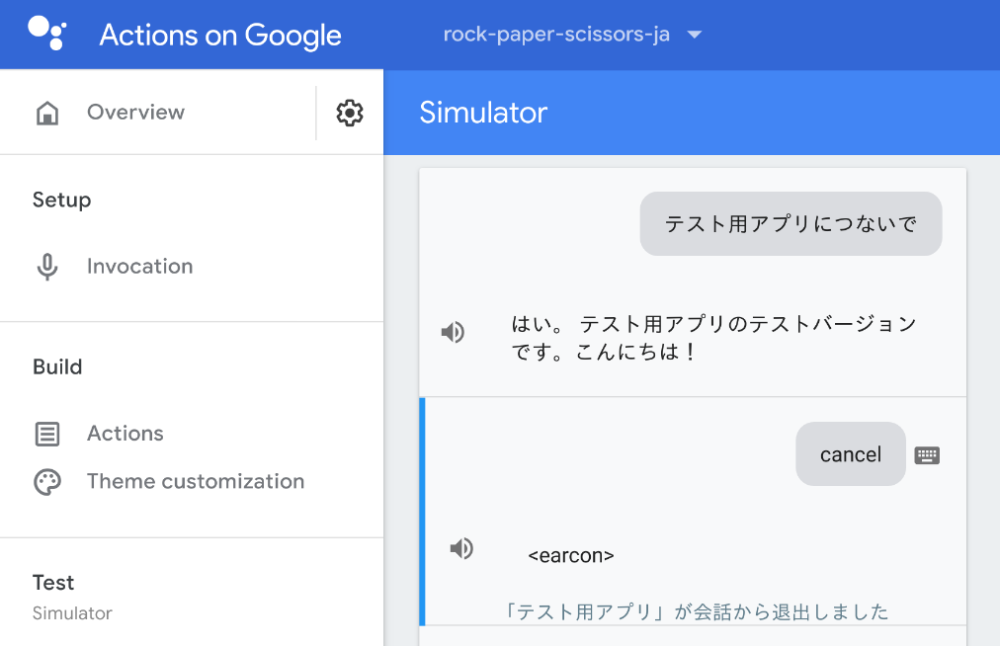
Interactive Canvasの実体は、ウェブページです。アクションがInteractive Canvasの利用をGoogleアシスタントに要求すると、スマートディスプレイやAndroidスマートフォンが持つ画面にそのウェブページが表示されます。
このセクションでは、Interactive Canvasを利用するために必要となる準備を行います。
Firebase Hostingの設定を変更する
Interactive Canvasにてウェブページが表示される環境は、一般的なウェブブラウザと比べて特殊です。以下は、制限される項目の一部です。
- Cookies を利用することができません。
- Local storage を利用することができません。
- Geolocation を利用することができません。
- カメラを利用することができません。
- alert() や confirm() など、ポップアップを利用することができません。
- Ajax のための Origin は null がセットされます。
- メモリは 200MB 以下に制限されます。
- アセットは null Origin からのリクエストを受け付けることが必要です。
特に Origin として null が設定されているために、Firebase Hosting でウェブページを配信する際に、Access-Control-Allow-Origin レスポンスヘッダとして "*" を返す必要があります。また、キャッシュ機構をオフにして動的コンテンツが正しく表示されるようにすることも求められます。
firebase.json ファイルについて、以下の内容で置き換えます。
{
"hosting": {
"public": "public",
"ignore": [
"firebase.json",
"**/.*",
"**/node_modules/**"
],
"headers": [
{
"source": "**",
"headers": [
{
"key": "Cache-Control",
"value": "no-cache,no-store,must-revalidate"
},
{
"key": "Access-Control-Allow-Origin",
"value": "*"
},
{
"key": "Access-Control-Expose-Headers",
"value": "ETag"
}
]
}
]
}
}ウェブページのひな型を作成する
ここで、Interactive Canvasで表示するウェブページの基礎となるファイルを作成します。まず、各ファイルを配置するためのディレクトリを以下のコマンドを実行することで作成します。
$ cd public
$ mkdir css
$ mkdir images
$ mkdir js
$ cd ..スタイルシートの作成
次に、ウェブページのデザインを定義するスタイルシートを作成します。新規に public/css/index.css ファイルを以下の内容で作成してください。
html {
display: flex;
height: 100%;
}
body {
display: flex;
flex: 1;
margin: 0;
background-color: white;
flex-direction: column;
justify-content: center;
align-items: center;
}
div.container {
width: 100%;
text-align: center;
}
#welcome {
display: block;
}
#welcome img {
flex: 1;
animation: rotate-anime 3s linear infinite;
}
@keyframes rotate-anime {
0% {transform: rotate(0);}
100% {transform: rotate(360deg);}
}
#vs {
display: none;
}
#result {
display: none;
}
.result-row {
display: flex;
}
.result-row div {
flex: 1;
}
#message {
display: none;
font-size: 48px;
}HTMLファイルの作成
firebase コマンドを使ってコードセットを生成した際に、すでに public/index.html ファイルが作成されています。この index.html ファイルを以下の内容で置き換えます。
<!DOCTYPE html>
<html>
<head>
<meta charset="utf-8" />
<meta name="viewport" content="width=device-width, initial-scale=1" />
<title>じゃんけんぽん！</title>
<link rel="shortcut icon" type="image/x-icon" href="data:image/x-icon;," />
<link rel="stylesheet" href="https://www.gstatic.com/assistant/immersivecanvas/css/styles.css" />
<link rel="stylesheet" href="css/index.css" />
<script src="https://www.gstatic.com/assistant/immersivecanvas/js/immersive_canvas_api.js"></script>
</head>
<body>
<div class="container">
<div id="welcome">
<img src="images/rock.png" />
<img src="images/scissors.png" />
<img src="images/paper.png" />
</div>
<div id="vs">
<img src="images/vs.png" />
</div>
<div id="result">
<div class="result-row">
<div>
<img id="user-choice" src="" />
</div>
<div>
<img id="action-choice" src="" />
</div>
</div>
<div id="message">
</div>
</div>
</div>
<script src="js/index.js"></script>
</body>
</html>Interactive Canvas向けのウェブページは、以下を満たす必要があります。
- 以下のスタイルシートを読み込みます。
https://www.gstatic.com/assistant/immersivecanvas/css/styles.css - 以下のJavaScriptファイルを読み込みます。
https://www.gstatic.com/assistant/immersivecanvas/js/immersive_canvas_api.js
また、レスポンシブであり、そしてSPA（Single Page Application）として作成されることが推奨されています。
このコードラボでは、HTMLファイルの中で主に以下の3つの構造を操作します。
- div#welcome - ユーザがグー、チョキ、パーのどれを出すかを選択するための画面。それぞれの画像が表示される。
- div#vs - アクションが何を出すかを考えている際の画面。対決を表す画像が表示される。
- div#result - じゃんけんの結果を表示するための画面。ユーザおよびアクションがそれぞれ出した手の画像が表示されると共に、ユーザが勝ったのか、負けたのか、またはあいこだったのかを示すメッセージも表示される。
会話の進行状況に応じて、上記の3つの要素のいずれかが表示されます。
JavaScriptファイルの作成
Interactive Canvasでは、ウェブページとフルフィルメントが相互に関連しながら動作が進みます。ウェブページを動的に変更する処理は、JavaScriptファイルに記載されたコードが担当します。
ここで、中身のないJavaScriptファイルを作成します。public/js ディレクトリに index.js ファイルを以下の内容で作成してください。
'use strict';
// TODO: Write your code here.画像ファイルのダウンロード
このコードラボでは、いくつかの画像ファイルを使用します。以下のURLから、画像ファイルが格納された zip ファイルをダウンロードします。
そして、以下のコマンドを実行して、public/images ディレクトリに画像ファイルを配置します。
$ cd public/images
$ unzip <images.zip へのパス>
$ cd ../..準備が完了したところで、いよいよ実際の開発を始めましょう。
このコードラボでは、じゃんけんゲームアクションを開発します。アクションが呼び出されると、アクションはユーザに対して声で「グー、チョキ、パーのどれを出しますか？」と問いかけを行います。そして、それと同時に、スマートディスプレイの画面に「グー、チョキ、パー」それぞれの画像を表示させます。ユーザは、どの手を出すか声で指示することができます。そして、画面上に表示された各画像をタップすることでも、どの手を出すか指示を行うことができるようにします。
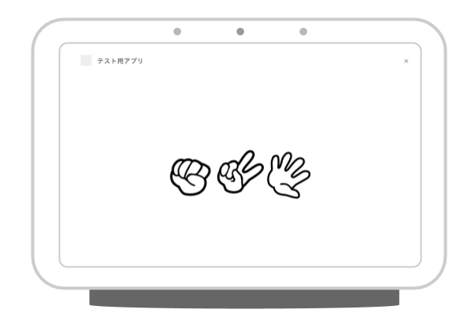
Default Welcome Intentを設定する
Dialogflowエージェントを作成すると、自動的に以下の2つのインテントが作られます。
- Default Welcome Intent - アクションが呼び出された際のインテント。
- Default Fallback Intent - どのインテントにも認識されなかった際に呼び出されるインテント。
Dialogflowエージェントの作成直後では、上記2つのインテントはフルフィルメントを使うように設定されていません。ここでは、Default Welcome Intent について、フルフィルメントを呼び出すように設定します。
以下の手順で、Default Welcome Intent インテントに対してフルフィルメントを有効にします。
- Dialogflow Console の左のナビゲーションにて、 Intents をクリックします。
- 中央のインテント一覧から、Default Welcome Intent をクリックします。
- Default Welcome Intent の設定ページの下にある Fulfillment セクションを展開し、その中にある Enable webhook call for this intent をONにします。
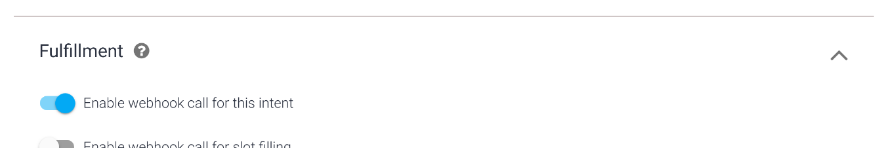
- Save ボタンを押します。
Default Welcome Intentインテントハンドラを実装する
Interactive Canvas を使ってスマートディスプレイに画面を表示するためには、Actions on Google Client Library が提供する ImmersiveResponse オブジェクトを利用します。このオブジェクトは、スマートディスプレイが持つ画面に対して、どのウェブページを表示するか、そしてユーザとのインタラクションによって会話の状況がどう変化したか、それらの情報を伝達するために使います。
functions/index.js ファイルの中に、以下のような行を見つけます。
// TODO: Write your code here.その行の下に、以下のコードを追記します。
app.intent('Default Welcome Intent', conv => {
conv.ask('どの手を出しますか？グー？チョキ？それともパー？');
conv.ask(new ImmersiveResponse({
url: `https://${firebaseConfig.projectId}.firebaseapp.com/`
}));
});最初の conv.ask() メソッド呼び出しでは、Googleアシスタントがユーザに対して問いかけるフレーズを指定しています。
そして、Interactive Canvas を使ってウェブページを画面に描画するために、そのウェブページのURLを持つ ImmersiveResponse オブジェクトを生成して、conv.ask() メソッドを呼び出しています。Googleアシスタントは、url プロパティに設定されたURLのウェブページをスマートディスプレイに描画します。
ここで指定しているURLは、Firebase Hostingにて配信されるウェブページのURLです。Actions プロジェクトのIDを process.env.FIREBASE_CONFIG から動的に取得して、URLを組み立てています。
JavaScriptから発話を送信する
Interactive Canvasによってスマートディスプレイの画面に視覚的な情報を表示することができます。もしタッチ操作に対応した画面であれば、そのイベントをJavaScriptにてハンドリングすることが可能です。そして、ユーザが声で指示をしたときと同じように、ある文字列をユーザが発話したとしてGoogleアシスタントに送信することができます。
Interactive Canvas では、 assistantCanvas というオブジェクトが提供されます。この assistantCanvas オブジェクトの sendTextQuery() メソッドに文字列を渡すことで、Googleアシスタントにユーザフレーズが送信されます。
ここでは、グー、チョキ、そしてパーの3つの画像それぞれにイベントハンドラを登録します。そして、もしいずれかがタップされた際に、タップされた手を示すフレーズをGoogleアシスタントに送信する処理を追加します。
public/index.html ファイルの中に、以下のような "welcome" というID値を持つ div 要素があります。
<div id="welcome">
<img src="images/rock.png" />
<img src="images/scissors.png" />
<img src="images/paper.png" />
</div>その div 要素の子要素として、3つの img 要素があります。img 要素それぞれに対して、じゃんけんの手を示す文字列を data-choice 属性として追加します。
<div id="welcome">
<img src="images/rock.png" data-choice="グー" />
<img src="images/scissors.png" data-choice="チョキ" />
<img src="images/paper.png" data-choice="パー" />
</div>次に、public/js/index.js ファイルにて、上記の各 img 要素に対してイベントハンドラを登録します。public/js/index.js ファイルの中に、以下のような記載を見つけます。
// TODO: Write your code here.この下に、以下のコードを追加します。
document.querySelectorAll('#welcome img').forEach(img => {
img.addEventListener('click', elem => {
assistantCanvas.sendTextQuery(elem.target.dataset.choice);
});
});イベントハンドラ内では、click イベントハンドラを img 要素に追加しています。そして、タップされた対象の img 要素の dataset.choice から対応するじゃんけんの手の名称を取得しています。最後に、assistantCanvas オブジェクトの sendTextQuery() メソッドにその名称を渡すことで、ユーザがじゃんけんの手を発話したときと同じ動作をJavaScriptコードによって実行します。
動作確認する
では、ここまでのコードをFirebaseにデプロイして、動作確認を行います。ターミナルから以下のコマンドを実行してください。
$ firebase deploy数分後、あなたは Firebase にあなたの Webhook が正常にデプロイされたことを示す "Deploy complete!" というメッセージを見るはずです。
次に、Actions Console Simulatorを使って、アクションを呼び出します。
Actions console simulator であなたのアクションをテストするために以下を行ってください。
- Actions console を開きます。
- 画面上部にて、別のプロジェクトが選択されている場合は、このコードラボで作成した Actions プロジェクトを選択します。
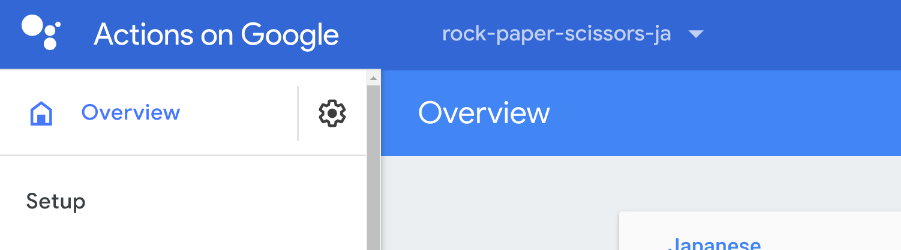
- 左のナビゲーションから、Test > Simulator をクリックします。
- Actions Simulator の Surface 設定項目から、"Smart Display" をクリックします。
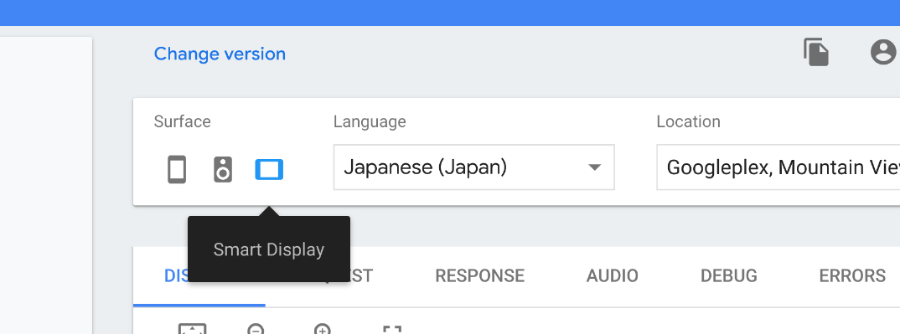
- アクションをテストするために、Input フィールド内に "テスト用アプリにつないで" とタイプして、Enter キーを押します。
- DISPLAY タブが選択されていない場合は、DISPLAY タブをクリックします。
- グー、チョキ、パーそれぞれの画像が回転しています。これらのいずれかをクリックします。クリックした手の名称がGoogleアシスタントに発話されたことを確認します。
- "cancel" とタイプします。会話が終了します。
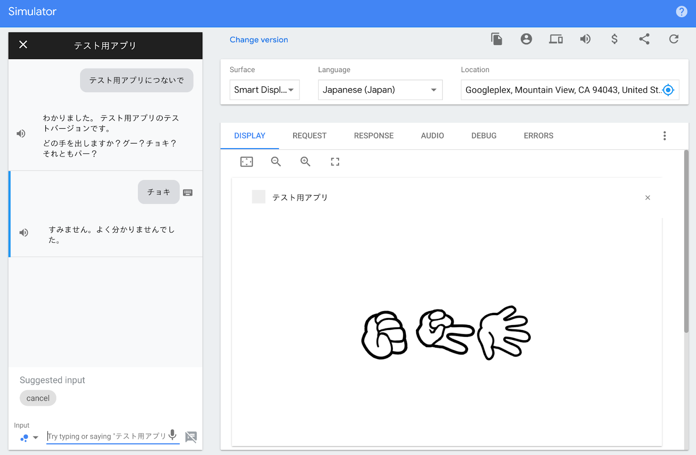
この時点では、じゃんけんの手に対応するインテントが定義されていないので、Default Fallback Intent と認識されます。
ユーザがアクションを呼び出して、じゃんけんの手を出すことができるようになりました。次に行うことは、アクションの手をランダムに決定し、ユーザが出した手と比較して、勝敗を決めます。その勝敗結果に基づいて、スマートディスプレイの画面を変更します。
もう少し詳しく動作を規定しておきましょう。ユーザがグー、チョキ、パーのいずれかをGoogleアシスタントに発話した後、以下の動作を行います。
- じゃんけんのグー、チョキ、パーのいずれかが発話されたことをDialogflowが認識し、そのことをフルフィルメントに通知します。
- フルフィルメントは、アクションの手をランダムに決定します。そして、受け取ったユーザの手と比較して、勝敗を決定します。
- 勝敗をユーザに伝えるフレーズをSimpleResponseとしてGoogleアシスタントに返します。これと同時に、ユーザが出した手、アクションが出した手、そして勝敗を示すメッセージを持つImmersiveCanvasオブジェクトを生成し、それもGoogleアシスタントに返します。
- 画面上のJavaScriptコードがフルフィルメントから返された情報を受け取ります。そして、対決を示す画像に画面を切り替えます。
- 一定時間後に、ユーザの手、アクションの手、そして勝敗を示すメッセージに画面を切り替えます。
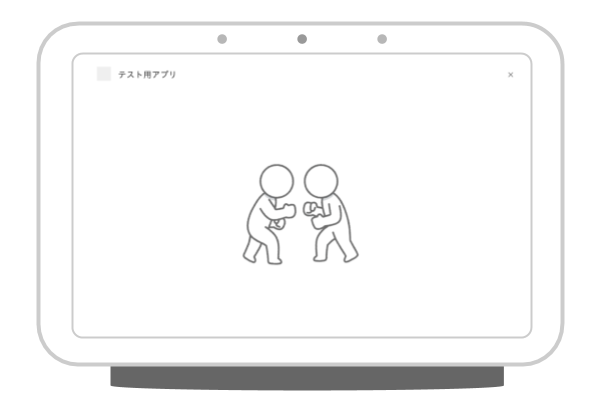
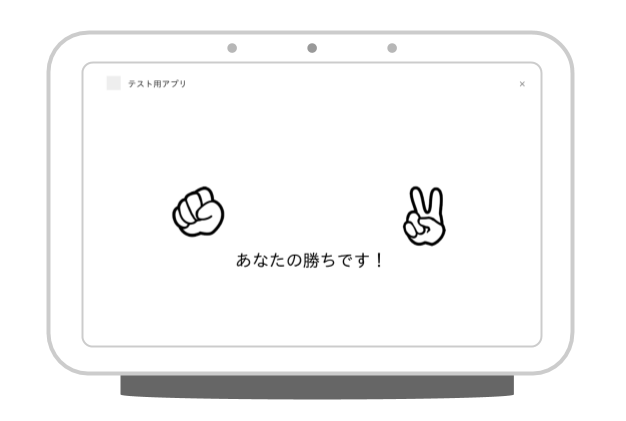
じゃんけんの手のエンティティを定義する
ユーザがグー、チョキ、パーのいずれかをGoogleアシスタントに言ったことを正しく認識するために、Dialogflowエージェントにてエンティティを定義します。
エンティティを以下の手順で定義します。
- Dialogflow Console を開きます。
- 左のナビゲーションから、Entities に移動します。
- 右上にある CREATE ENTITY ボタンをクリックします。
- Entity name として "user-choice" と入力します。
- Click here to edit entry をクリックします。そして、以下の入力を行います。
- Enter reference value に "rock" を入力します。
- Enter synonym に "グー" を入力します。
- 同様に、以下の組み合わせで入力を行います。
- Enter reference value: "paper"、Enter synonym: "パー"
- Enter reference value: "scissors"、Enter synonym: "チョキ"
- SAVE ボタンをクリックします。
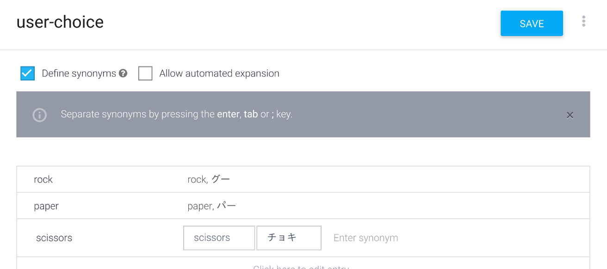
じゃんけんの手のインテントを定義する
次に、先ほど定義した user-choice エンティティを使って、ユーザからのじゃんけんの手のフレーズを識別するためのインテントを定義します。以下の手順でインテントを定義します。
- Dialogflow Console を開きます。
- 左のナビゲーションから、Intents に移動します。
- CREATE INTENT ボタンをクリックします。
- Intent name に "Show" と入力します。
- ADD TRAINING PHRASES をクリックします。そして、Add user expression に以下を入力します。
- グー
- チョキ
- パー

- Fulfillment を展開して、ENABLE FULFILLMENT をクリックします。その後、Enable webhook call for this intent にチェックを入れます。
- SAVE ボタンをクリックします。
Showインテントハンドラを定義する
DialogflowエージェントにShowインテントが定義されたことにより、ユーザがじゃんけんの手をGoogleアシスタントに言った際にフルフィルメントが呼び出されるようになりました。このセクションでは、Cloud Functions for Firebase で実装されているフルフィルメントに、Showインテントハンドラのコードを追加します。
まず、グー、チョキ、パーという読み方を定義するためのオブジェクト、およびユーザの手とアクションの手の組み合わせごとに勝敗のメッセージを決定するためのオブジェクトを定義します。functions/index.js ファイルの中から、以下の記載を見つけます。
// TODO: Write your code here.その行の下に、以下のコードを追記します。
const pronoun = {
rock: 'グー',
scissors: 'チョキ',
paper: 'パー'
};
const judgeMap = {
rock: {
rock: 'あいこです。',
paper: 'あなたの負けです。',
scissors: 'あなたの勝ちです！'
},
paper: {
rock: 'あなたの勝ちです！',
paper: 'あいこです。',
scissors: 'あなたの負けです。'
},
scissors: {
rock: 'あなたの負けです。',
paper: 'あなたの勝ちです！',
scissors: 'あいこです。'
}
};上記のコードに続いて、以下のShowインテントハンドラのコードについても追記します。
app.intent('Show', (conv, param) => {
// ユーザが出した手を取得する。
const userChoice = param['user-choice'].toLowerCase();
// アクションの手をランダムに決定する。
const actionChoice = ['rock', 'paper', 'scissors'][Math.floor(Math.random() * 3)];
// 勝敗を示すメッセージを取得する。
const message = judgeMap[userChoice][actionChoice];
// SSMLを使って返事を組み立てる。
const ssml = `
<speak>
<p>はい、私も何を出すか決めました。</p>
<wait time="500ms" />
<p>では、じゃんけんぽん！</p>
<wait time="400ms" />
<p>あなたは、${pronoun[userChoice]}を出しました。</p>
<p>私は、${pronoun[actionChoice]}を出しました。</p>
<p>${message}</p>
<wait time="400ms" />
<p>もう一度遊びますか？</p>
</speak>`;
conv.ask(ssml);
// 画面を更新するための情報を持つImmersiveResponseオブジェクト。
conv.ask(new ImmersiveResponse({
state: {
scene: 'result',
userChoice,
actionChoice,
message
}
}));
});Dialogflowエージェントに定義したShowインテントにより、ユーザの発話から user-choice パラメータ値が決定します（userChoice）。これを param 引数から取得し、小文字に変換します。次に、アクションの手を Math.random() を使ってランダムに決定します（actionChoice）。そして、先ほど追記した judgeMap オブジェクトを使って、勝敗を示すメッセージを決定します（message）。
「じゃんけんぽん！」という合図と勝敗の結果は、以下の2つの手法を使ってユーザに届けます。
- SSMLによる発話。
- 画面の更新。
SSML を使うことで、Googleアシスタントの発声をカスタマイズすることができます。このコードラボでは、wait タグを使って、文と文の発声の間に無音時間を作り出しています。
そして、スマートディスプレイの画面上の表示を更新するために、以下の情報を持つ ImmersiveResponse オブジェクトを生成し、conv.ask() メソッドに渡しています。
- scene: じゃんけん結果にシーンを移行するための "result" 値。
- userChoice: ユーザが出した手を示す文字列。
- actionChoice: アクションが出した手を示す文字列。
- message: 勝敗を示すメッセージ文字列。
SSML文字列およびImmersiveResponseオブジェクトを conv.ask() メソッドに渡すことで、Googleアシスタントに発話と画面更新を指示することができます。
画面更新要求をハンドリングする
フルフィルメントから送信されたImmersiveResponseオブジェクトをGoogleアシスタントが受け取った後に、スマートディスプレイ上では画面を更新するためにJavaScriptコードが実行されます。具体的には、画面を更新する必要が生じたとき（つまり ImmersiveResponse オブジェクトがフルフィルメントから返されたとき）に呼び出されるコールバック関数を登録します。
public/js/index.js ファイルの中に、以下のような記載を見つけます。
// TODO: Write your code here.この下に、以下のコードを追加します。
assistantCanvas.ready({
onUpdate(state) {
// Display the versus image.
if (state.scene === 'result') {
document.querySelector('#welcome').style.display = 'none';
document.querySelector('#vs').style.display = 'block';
document.querySelector('#user-choice').src = `images/${state.userChoice}.png`;
document.querySelector('#action-choice').src = `images/${state.actionChoice}.png`;
document.querySelector('#message').innerText = state.message;
// Display the result.
}
// Initialize the screen.
}
});assistantCanvas オブジェクトの ready() メソッドに対して、コールバック関数を持つオブジェクトをセットします。コールバック関数は以下の2つが定義可能です。
- onUpdate() - state 値を持つ ImmersiveResponse オブジェクトがフルフィルメントから返されたときに呼び出される。
- onTtsMark() - Googleアシスタントの発話の開始、終了およびSSMLに含まれる mark タグが評価されたときに呼び出される。
onUpdate() コールバック関数には、フルフィルメントにて ImmersiveResponse オブジェクトに渡した state オブジェクトがそのまま渡されます。ここでは、state オブジェクトに含まれる scene 値に基づいて、画面の更新処理を分岐しています。また、ユーザやアクションが出した手に応じて画像を切り替え、また勝敗を示すメッセージを表示しています。
発話に合わせて画面を更新する
ここで、Googleアシスタントがじゃんけんの結果をユーザに伝える際に、発話と画面の更新タイミングにちょっとした仕掛けを入れます。具体的には、以下の動作を実現します。
- 対決を示す画面（"public/images/vs.png" 画像ファイルを表示する ID 値が "vs" の div 要素）を表示する。
- 「はい、私も何を出すか決めました。では、じゃんけんぽん！」と発話する。
- 結果を示す画面（ユーザとアクションが出した手の画像および勝敗を示すメッセージを表示する ID 値が "result" の div 要素）を表示する。
- 「あなたは、グーを出しました。私は、チョキを出しました。あなたの勝ちです！もう一度遊びますか？」と発話する。
この動作を実現するために、JavaScript の setTimeout() 関数を利用します。
public/js/index.js ファイルの中に、以下のような記載を見つけます。
// Display the result.この下に、以下のコードを追加します。
setTimeout(() => {
document.querySelector('#vs').style.display = 'none';
document.querySelector('#result').style.display = 'block';
document.querySelector('#message').style.display = 'block';
}, 5000);上記の動作の 3. について、5秒後に行うように setTimeout() 関数に指定しています。これによって、発話と画面の動きがリッチになり、ユーザ体験が向上します。
動作確認する
この時点で、遊ぶことができるようになりました。ここまでのコードをFirebaseにデプロイして、動作確認を行います。ターミナルから以下のコマンドを実行してください。
$ firebase deploy数分後、あなたは Firebase にあなたの Webhook が正常にデプロイされたことを示す "Deploy complete!" というメッセージを見るはずです。
次に、Actions Console Simulatorを使って、アクションを呼び出します。
Actions console simulator であなたのアクションをテストするために以下を行ってください。
- Actions console を開きます。
- 画面上部にて、別のプロジェクトが選択されている場合は、このコードラボで作成した Actions プロジェクトを選択します。
- 左のナビゲーションから、Test > Simulator をクリックします。
- Actions Simulator の Surface 設定項目から、"Smart Display" をクリックします。
- アクションをテストするために、Input フィールド内に "テスト用アプリにつないで" とタイプして、Enter キーを押します。
- DISPLAY タブが選択されていない場合は、DISPLAY タブをクリックします。
- グー、チョキ、パーそれぞれの画像が回転しています。これらのいずれかをクリックします。クリックした手の名称がGoogleアシスタントに発話されたことを確認します。
- "cancel" とタイプします。会話が終了します。
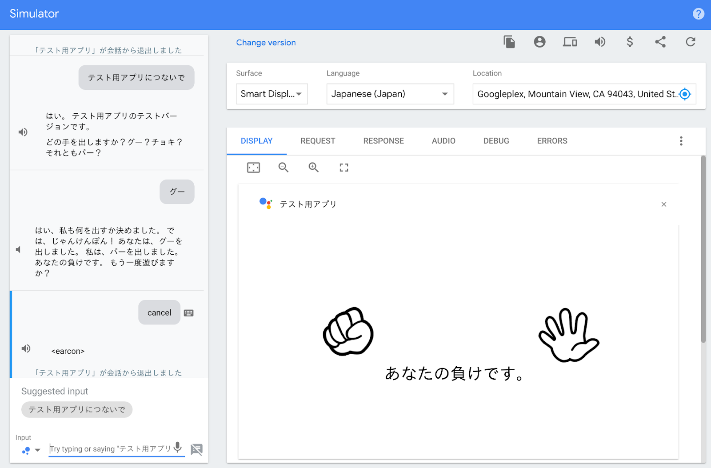
ここまでで、実際にじゃんけんで遊べるようになりました。このセクションにて、最後の仕上げを行います。残る機能は、以下の2つです。
- もう一度遊ぶかどうかを問い合わせる。
- いつでも終了できるようにする。
Follow-upインテントを追加する
じゃんけんの結果をユーザに伝えた後に、Googleアシスタントは再度じゃんけんをするかどうかを問い合わせています。ユーザはその問い合わせに「再度遊ぶ」のか「会話を終える」のか答えます。このような機能を実装するために、Follow-upインテントを利用すると便利です。
では、以下の手順にてFollow-upインテントを登録します。
- Dialogflow Console を開きます。
- 左のナビゲーションから、Intents に移動します。
- "Show" インテントの行にマウスカーソルを合わせると、Add follow-up intent と表示されるので、それをクリックします。

- どの Follow-up インテントを作成するかを指定するポップアップが表示されます。この中から yes と no の2つを追加します。

会話を終える意図を示す "Show - no" インテントについて、以下の手順で設定します。
- 左のナビゲーションから、Intents に移動します。
- インテントの一覧から "Show - no" をクリックします。
- Text response に "また遊びましょう。" と入力します。
- Set this intent as end of conversation を ON にします。
- SAVE ボタンをクリックします。
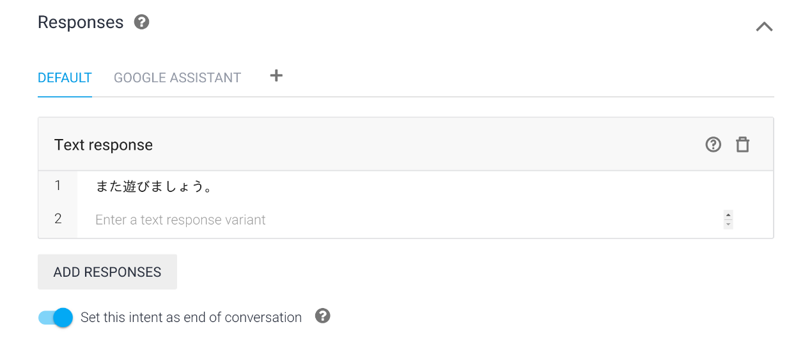
再びじゃんけんを行う意図を示す "Show - yes" インテントは、画面の更新を伴うために、フルフィルメントを呼び出します。以下の手順で "Show - yes" インテントの設定を行います。
- 左のナビゲーションから、Intents に移動します。
- インテントの一覧から "Show - yes" をクリックします。
- Fulfillment を展開して、ENABLE FULFILLMENT をクリックします。その後、Enable webhook call for this intent にチェックを入れます。
- SAVE ボタンをクリックします。
そして、Show - yes インテントハンドラを functions/index.js ファイルに追加します。functions/index.js ファイルの中から、以下の記載を見つけます。
// TODO: Write your code here.その行の下に、以下のコードを追記します。
app.intent('Show - yes', conv => {
conv.ask('わかりました。どの手を出しますか？グー？チョキ？それともパー？');
conv.ask(new ImmersiveResponse({
state: {
scene: 'restart'
}
}));
});scene プロパティに "restart" を指定することで、画面の更新動作として初期状態に戻すことを指示します。
この ImmersiveResponse オブジェクトの内容に基づいて、画面を初期状態に戻す処理を public/js/index.js ファイルに追記します。public/js/index.js ファイルの中に、以下のような記載を見つけます。
// Initialize the screen.この下に、以下のコードを追加します。
if (state.scene === 'restart') {
document.querySelector('#welcome').style.display = 'block';
document.querySelector('#vs').style.display = 'none';
document.querySelector('#result').style.display = 'none';
document.querySelector('#message').style.display = 'none';
}ID 値として "welcome" を持つ div 要素のみを表示状態にすることで、画面を初期状態に戻します。
Endインテントを追加する
最後に、アクションを終了するインテントを追加します。以下の手順で終了インテントを追加します。
- Dialogflow Console を開きます。
- 左のナビゲーションから、Intents に移動します。
- CREATE INTENT ボタンをクリックします。
- Intent name に "End" と入力します。
- ADD TRAINING PHRASES をクリックします。そして、Add user expression に以下のようなアクションを終えるためにユーザが言う可能性のあるフレーズを入力します。
- 終了
- やめる
- バイバイ
- Text response に "また遊びましょう。" と入力します。
- Set this intent as end of conversation を ON にします。
- SAVE ボタンをクリックします。
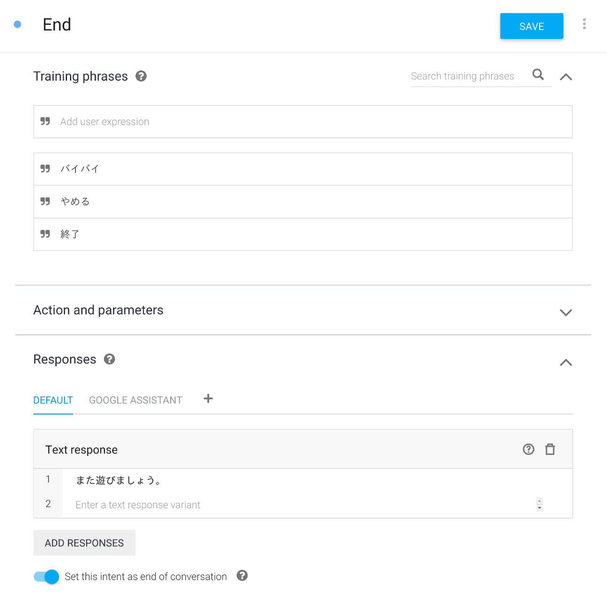
動作確認する
ついにアクションが完成しました！ここまでのコードをFirebaseにデプロイして、動作確認を行います。ターミナルから以下のコマンドを実行してください。
$ firebase deploy数分後、あなたは Firebase にあなたの Webhook が正常にデプロイされたことを示す "Deploy complete!" というメッセージを見るはずです。
次に、Actions Console Simulatorを使って、アクションを呼び出します。
Actions console simulator であなたのアクションをテストするために以下を行ってください。
- Actions console を開きます。
- 画面上部にて、別のプロジェクトが選択されている場合は、このコードラボで作成した Actions プロジェクトを選択します。
- 左のナビゲーションから、Test > Simulator をクリックします。
- Actions Simulator の Surface 設定項目から、"Smart Display" をクリックします。
- アクションをテストするために、Input フィールド内に "テスト用アプリにつないで" とタイプして、Enter キーを押します。
- DISPLAY タブが選択されていない場合は、DISPLAY タブをクリックします。
- グー、チョキ、パーそれぞれの画像が回転しています。これらのいずれかをクリックします。クリックした手の名称がGoogleアシスタントに発話されたことを確認します。
- "はい" とタイプします。再度じゃんけんが始まります。
おめでとうございます！
あなたは今、Interactive Canvas を使った会話型のユーザインタフェースを構築して、スマートディスプレイ向けのアクションの構築方法を知ることができました。
What we've covered
- 会話型アクションに Interactive Canvas による視覚的な情報を追加するための方法。
- ユーザの音声入力を受け取り、それに対して画面を更新するための方法。
- ユーザの画面の操作を受け取り、それに対する何らかの処理をするための方法。
次は何ですか？
Interactive Canvasの使い方を学ぶために、Googleはよりリッチなコードサンプルを提供しています。
Actions on Googleについて学ぶために、以下のリソースについても参考にすることができます:
- actions.google.com: Actions on Googleの公式ドキュメントサイトです。
- Actions on Google GitHub repo: サンプルコードとライブラリがあります。
- Dialogflow.com: Dialogflowの公式ドキュメントサイトです。
Twitter @ActionsOnGoogle をフォローしてください。また、あなたが開発したものを #AoGDevs および #AoGDevsJa にてシェアしてください。
Feedback survey
次に行く前に、このフォームを使って私たちにフィードバックを送ってください！